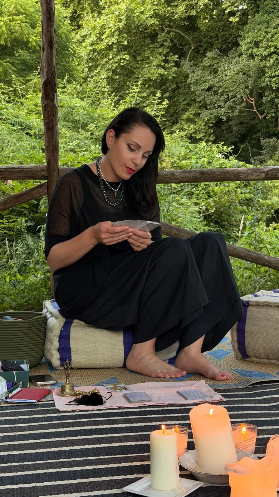
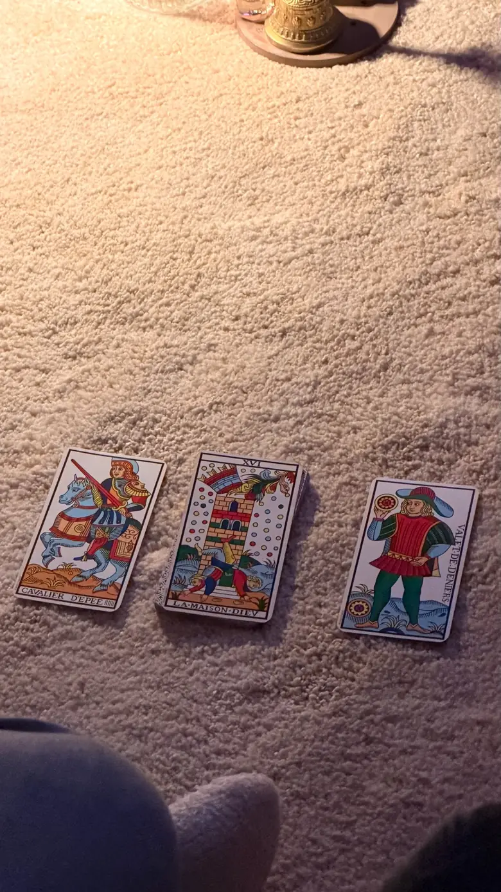
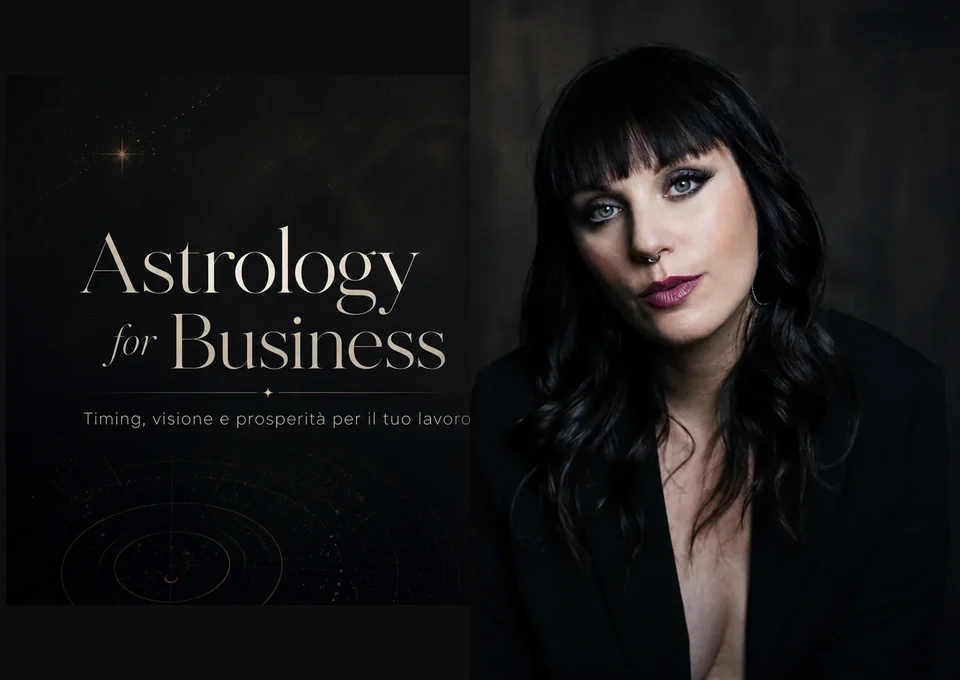
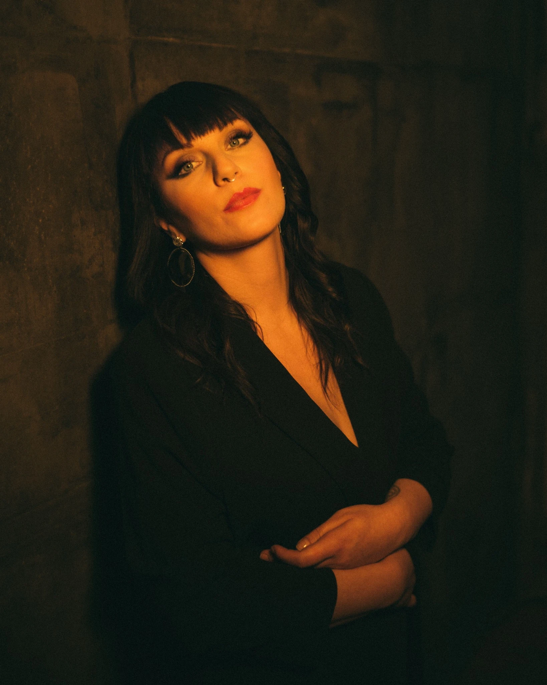
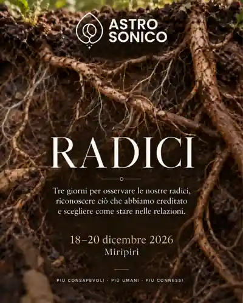

Da dove arrivo?
La lettura del Tema Natale è il punto di partenza: una mappa simbolica delle tue inclinazioni, risorse e contraddizioni.
Scopri il Tema NataleCon Francesca Fariello puoi esplorare il tuo Tema Natale, leggere i transiti del momento o affrontare una domanda attraverso i Tarocchi di Marsiglia. Incontri individuali online per osservare ciò che vivi e scegliere con maggiore consapevolezza.
Astrologia evolutiva e Tarocchi per osservare ciò che vivi, trovare nuovi punti di vista e scegliere la tua direzione.
Online, ovunque tu sia Non occorre conoscere l’astrologia


Scegli in base a ciò di cui hai bisogno oggi. Se è la tua prima esperienza, il Tema Natale è il punto di partenza consigliato.
La lettura del Tema Natale è il punto di partenza: una mappa simbolica delle tue inclinazioni, risorse e contraddizioni.
Scopri il Tema NataleUna sessione di Tarocchi o la lettura dei Transiti apre nuove prospettive su una scelta, una relazione o una fase di cambiamento.
Scopri Tarocchi e TransitiUn percorso annuale per osservare lavoro, denaro, valore personale e direzione con strumenti astrologici e simbolici.
Esplora il BusinessHo creato AstroSonico per dare spazio a una ricerca che attraversa la mia vita da anni: usare i simboli come strumenti per incontrarsi, interrogarsi e vivere con maggiore presenza.
Integro astrologia evolutiva, Tarocchi di Marsiglia, meditazione e pratiche di ascolto. Durante le sessioni parliamo in modo chiaro, anche quando i temi sono complessi. Non è necessario conoscere segni, pianeti o arcani.
Come possiamo lavorare insieme
Conosci la tua mappa di nascita attraverso un incontro individuale, con registrazione e PDF.
Immagini e archetipi per guardare ciò che vivi, senza cercare risposte preconfezionate.
Quattro incontri durante l'anno per osservare in anticipo i tuoi transiti personali e i temi che emergono.

Un percorso annuale per imprenditrici, freelance e creative. Lettura della tua carta natale, sinastria con il business, transiti dell’attività, Tarocco di Marsiglia e pratiche di meditazione. Un anno per osservare con più attenzione il lavoro che stai costruendo.


Ho creato AstroSonico per dare spazio a una ricerca che attraversa la mia vita da anni: usare i simboli come strumenti per incontrarsi, interrogarsi e vivere con maggiore presenza.
Integro astrologia evolutiva, Tarocchi di Marsiglia, meditazione e pratiche di ascolto. Durante le sessioni parliamo in modo chiaro, anche quando i temi sono complessi. Non è necessario conoscere segni, pianeti o arcani.
Come possiamo lavorare insieme
Un ritiro invernale di tre giorni dedicato a famiglia, eredità, relazioni e al modo in cui le nostre origini continuano a vivere nel presente. Attraverso astrologia, Tarocchi e pratiche condivise.
Scopri il ritiro
Una Gift Card AstroSonico è un invito a fermarsi, farsi domande e dedicarsi un tempo di ascolto. Per chi ami. O per te.
No. Le sessioni sono pensate anche per chi si avvicina per la prima volta all'astrologia o ai Tarocchi. Francesca utilizza un linguaggio accessibile, senza dare per scontato alcun concetto.
No. L'approccio è simbolico ed evolutivo: la lettura propone interpretazioni e spunti di riflessione, non certezze sugli avvenimenti futuri né decisioni al posto tuo.
Online in videochiamata. Per il Tema Natale servono data, ora e luogo di nascita; la sessione include registrazione e PDF della mappa. Gli altri percorsi hanno modalità specifiche.
Se non hai mai letto il tuo Tema Natale, è il punto di partenza consigliato. Per una domanda immediata puoi scegliere i Tarocchi. Se desideri orientamento continuativo, esplora Roadmap o Astro for Business.